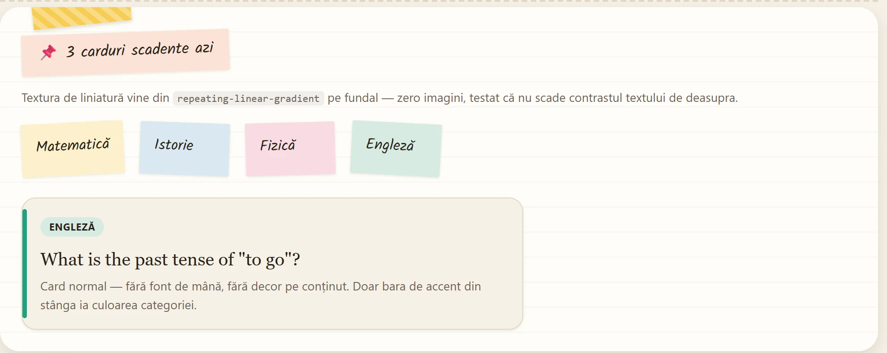
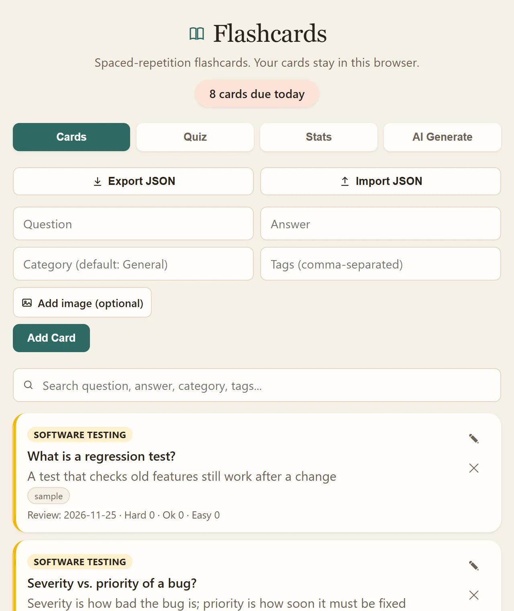
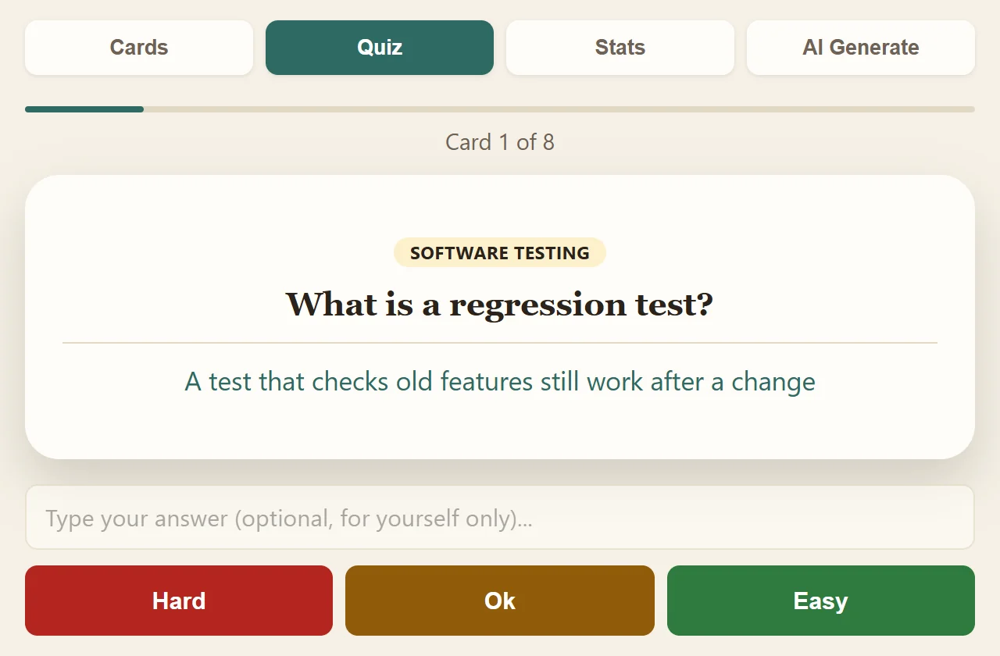

Flashcards
A spaced-repetition flashcards app built with plain HTML, CSS, and JavaScript - plain static files, no frameworks, no build step, no backend.

What it does
A spaced-repetition flashcard app with a simplified SM-2–style scheduler, categories and search, optional images per card, two quiz modes, a coins-and-hints system, stats, and optional AI-assisted card generation (bring your own API key). Everything stays in the browser's local storage - no server, no account.
My role
Product idea, UX, and the scheduling/data-model design; built in pair-programming with an AI assistant (Claude).
Quality
Color system verified against WCAG AA contrast by calculation, not by eye, in both light and dark mode. 32 unit tests for the scheduler, hints, card validation and reading the AI's reply run on every push; writing them found two real bugs, both fixed.
Status
Live · stable, plain static files · MIT · source on GitHub.
Why this exists
Most flashcard apps either lock data behind an account or are over-engineered for what's fundamentally a simple problem: show a question, hide the answer, let the learner grade their own recall, and use that grade to decide when to show the card again. This was an exercise in building that loop well - a real spaced-repetition scheduler, a thoughtful visual design, and a few small ideas (hint-buying with earned coins, AI-assisted card generation) layered on top without compromising the core mechanic.
Design case study: three passes to a calm study tool
A flashcards app lives or dies on one loop: see a question, try to recall the answer, grade yourself honestly. For students revising for exams, the interface has two jobs that pull against each other: make that loop inviting enough to come back to every day, and stay quiet enough that the card itself is the only thing that matters.
Pass 1: remove the default look
The first version used indigo (#4f46e5): the color nearly every AI-generated interface starts with. A UI audit flagged it, and I chose a direction that looks like studying rather than software: a warm paper background and one dark teal "ink" accent. For type I compared three options and picked the one with no cost at all: Georgia for headings and the system font for everything else, instead of an embedded font or Google Fonts.
The audit also found a real accessibility bug: white text on the Ok and Easy buttons was under the WCAG AA minimum, some of it under 2:1. The cause was one color doing two jobs, text and button background. I split them into two sets of variables and checked every pair by calculation, not by eye.

Pass 2: "too monotone", so color gets a job
In use, the single accent fixed the "AI look" but felt flat, with nothing inviting and nothing to tell subjects apart at a glance. So color got a job: a 7-color "highlighter" palette, one color per category. The color comes from a hash of the category name, so the same subject always gets the same color and nothing extra is stored in the data. Badges use soft tints with normal text on top (6.7 to 13.7:1 contrast); the vivid colors appear only as decoration, never behind text.
I also tried a "student notebook" theme: ruled paper drawn in CSS, washi tape, rotated sticky-note chips and a handwriting font. I compared three handwriting fonts by size and chose Kalam (11.3 KB embedded) over Patrick Hand (18.6 KB) and Caveat (65 KB).

Pass 3: keep the system, cut the costume
Before publishing it, I asked for an audit from an employer's point of view, and it was clear: the notebook theme read as a student demo, not a product. I kept everything that carried meaning: the category palette, paper and ink, the type pairing, the radius and shadow scales. I removed everything that was only costume: the textures, the tape, the margin line, the rotations, the "Do your best!" decorations and the handwriting font (11.3 KB lighter). Emoji became one consistent set of 12 line icons, and motion stayed small and purposeful: the answer fades in, tabs fade, buttons give press feedback, and a progress bar shows where you are in the quiz.
One idea I deliberately rejected: a "pulse, then move to the next card" animation on the grade buttons. It would have put a timer into the grading step that drives the spaced-repetition schedule, and that risk wasn't worth the polish.


Pass 3: today's app, the card list and the quiz.
After the reviews (November 2026)
A design review of the whole portfolio pointed at three things, all fixed: the first screen was an empty form, so the empty state now offers a one-click sample deck under a one-line subtitle; two inputs cut off their placeholders ("Category (default: G…"), so the inputs now sit two per row; and the headings skipped a level for screen readers.
What I haven't done yet
- No usability testing with other people. Every decision above came from my own use, audits and reviews. The next step is to watch two or three students use it for a week.
- The app doesn't yet respect the system "reduce motion" setting.
Highlights
- Deterministic category colors. Each category's color is derived from a hash of its name at render time - never stored - so the data model never needs a "color" field and two devices always render categories identically.
- The answer isn't in the DOM until you ask for it. Clicking "Show Answer" is what writes the answer into the page, rather than just unhiding it with CSS - a deliberate choice so the quiz can't be "cheated" by inspecting the page early.
- An anti-farming rule in free-practice mode. "All cards" mode intentionally doesn't touch the spaced-repetition schedule, and a card only earns coins once per calendar day there - otherwise the same card could be regraded in a loop for infinite coins.
- AI card generation stays optional and reviewed. Paste text or drop a file, and Claude drafts question/answer pairs - but nothing is added to the deck until each card is reviewed and confirmed.
- Client-side image compression. Images attached to cards are resized and compressed before saving, so a handful of photos don't blow through the browser's local storage quota.
How it was built
HTML5, CSS3, and vanilla JavaScript (ES6+) - no framework, no bundler. Building the scheduling algorithm, the data model, and the UI state management by hand was the point of the exercise, not a constraint I hit by accident. LocalStorage is the only persistence layer; the optional AI generation feature calls the Anthropic API directly from the browser (model: Claude Sonnet 5), using a key the visitor provides themselves. That key is stored in the browser's localStorage, scoped to this site only - it stays on the visitor's own device until they remove it or clear their browser data, and it's never sent anywhere except directly to Anthropic's API.